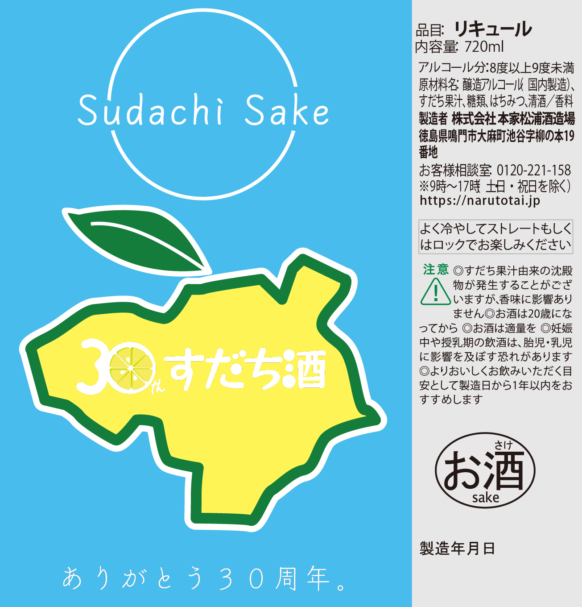
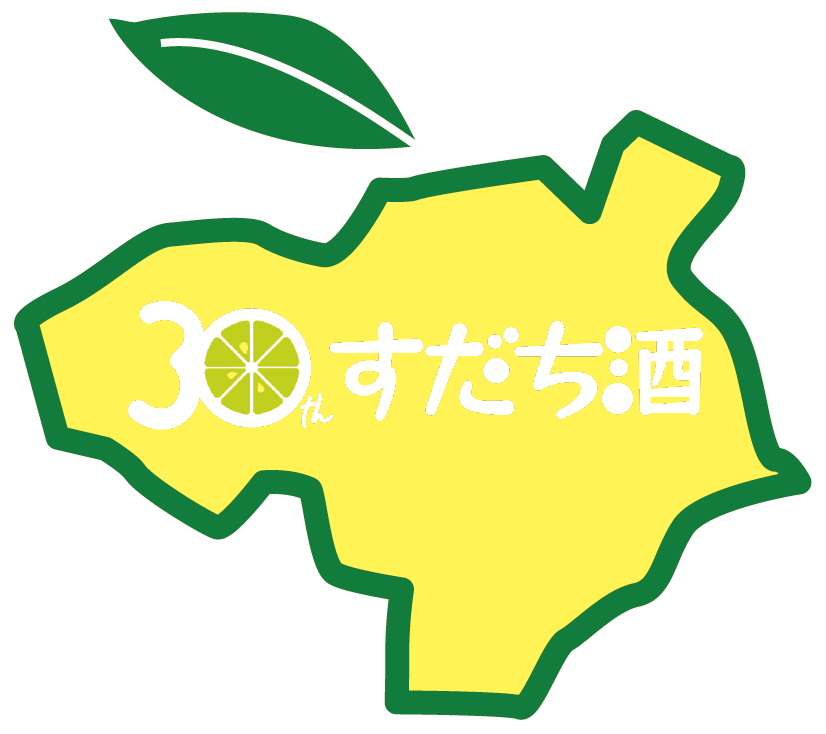

すだち酒30周年記念
ラベルデザイン応募作品

概要
すだち酒30周年記念のラベルデザインの募集に応募しました。
| 制作時期 | 2023年7月 |
| 制作期間 | 約2週間 |
| 制作人数 | 個人制作 |
| 使用したもの | Illustrator |
デザイン

中央に配置されているすだちは生産地の徳島県のシルエットを使いました。
すだちのスッキリとした爽やかななイメージを表現するために清涼感のある水色とすだちの黄色を使いました。